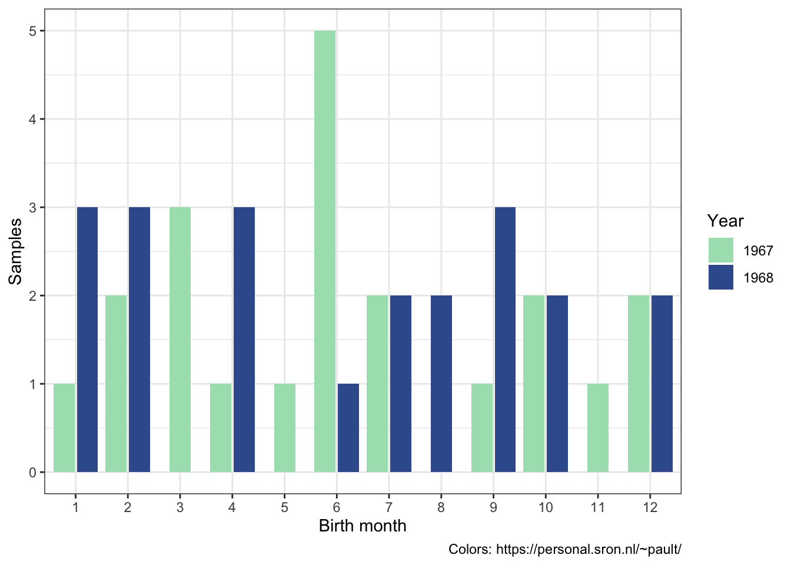

8 Visualizations
The ggplot2 library is an extremely popular visualization package that provides an interface for extremely fine control over graphics for plotting. It is used by a number of of other popular packages in their built-in plotting functions. It provides a “grammar of graphics” that is quite useful to know.
A note about accessibility:
The default colors automatically selected by ggplot2 are not very user-friendly. Colors are chosen by sampling evenly hues on the color wheel. Because of this behavior, all of the colors have similar intensity, which means that they do not work in a gray-scale printing, and may be difficult to distinguish for users with atypical color vision. There are many resources for selecting color palettes online. Here are just a few:
library(ggplot2)
library(viridis)
?viridis
locations.palette <- viridis(3)
smoking.palette <- inferno(2, begin = 0.5, direction = -1)
years.palette <- mako(2, begin = 0.4, end = 0.9, direction = -1)
genes.palette <- plasma(4)8.1 Histograms and density plots
ggplot(data = experiment, mapping = aes(x = birthweight)) +
geom_histogram(binwidth = 0.25) +
facet_wrap(~location, nrow = 3) +
labs(x = "weight (kg)", y = "births") +
theme_bw()ggplot(data = experiment, mapping = aes(x = birthweight)) +
geom_density() +
theme_bw()ggplot(data = experiment, mapping = aes(x = birthweight)) +
geom_density() +
facet_wrap(~location, nrow = 3) +
theme_bw()ggplot(data = experiment,
mapping = aes(x = birthweight,
color = location)) +
geom_density() +
scale_color_manual(values = locations.palette) +
theme_bw()ggplot(data = experiment,
mapping = aes(x = birthweight,
color = as.factor(year))) +
geom_density() +
facet_wrap(~as.factor(year), nrow = 1) +
scale_color_manual(values = years.palette) +
theme_bw()8.2 Bar charts
ggplot(data = experiment,
mapping = aes(x = as.factor(month), fill = as.factor(year))) +
geom_bar(position = position_dodge2(preserve = "single")) +
labs(x = "Birth month", y = "Samples", fill = "Year",
caption = "Colors: https://personal.sron.nl/~pault/") +
scale_fill_manual(values = years.palette) +
theme_bw()
ggplot(data = experiment,
mapping = aes(x = maternal.cigarettes, fill = location)) +
geom_bar(position = position_dodge2(preserve = "single")) +
labs(x = "Maternal Smoking (cigarettes / day)", y = "Samples", fill = "Collection Site") +
scale_fill_manual(values = locations.palette) +
facet_wrap(~year) +
theme_bw()8.3 Box and violin plots
experiment %>%
pivot_longer(cols = c(22:25),
names_to = "gene.id",
values_to = "expression") %>%
ggplot(mapping = aes(x = smoker, y = expression, fill = smoker)) +
geom_boxplot() +
facet_wrap(~ gene.id, nrow = 2) +
scale_fill_manual(values = smoking.palette) +
scale_x_discrete(labels = c("non-smoker", "smoker")) +
guides(fill = "none") +
labs(y = "miRNA expression") +
theme_bw() +
theme(axis.title.x = element_blank())experiment %>%
pivot_longer(cols = c(22:25),
names_to = "gene.id",
values_to = "expression") %>%
ggplot(mapping = aes(x = smoker, y = expression, fill = smoker)) +
geom_violin() +
scale_fill_manual(values = smoking.palette) +
scale_x_discrete(labels = c("non-smoker", "smoker")) +
facet_wrap(~ gene.id, nrow = 2) +
guides(fill = "none") +
labs(x = "Maternal tobacco use in pregnancy", y = "miRNA expression") +
theme_bw()8.4 Scatter plots
experiment %>%
pivot_longer(cols = c(22:25),
names_to = "gene.id",
values_to = "expression") %>%
ggplot(mapping = aes(x = maternal.cigarettes, y = expression, color = location, shape = low.birthweight)) +
geom_point() +
scale_color_manual(values = locations.palette) +
scale_shape_manual(values = c(16, 17), labels = c("< 2.72 kg", ">= 2.72 kg")) +
facet_wrap(~ gene.id, nrow = 2) +
labs(x = "Maternal cigarettes / day", y = "miRNA expression") +
theme_bw() +
theme(legend.title = element_blank())experiment %>%
filter(weeks.gestation >= 38, weeks.gestation <= 40) %>%
pivot_longer(cols = c(22:25),
names_to = "gene.id",
values_to = "expression") %>%
ggplot(mapping = aes(x = maternal.cigarettes, y = expression, color = gene.id, shape = low.birthweight)) +
geom_point() +
scale_color_manual(values = genes.palette) +
scale_shape_manual(values = c(16, 17), labels = c("< 2.72 kg", ">= 2.72 kg")) +
facet_wrap(~ weeks.gestation, nrow = 1) +
labs(x = "Maternal cigarettes / day", y = "miRNA expression") +
theme_bw() +
theme(legend.title = element_blank())ggplot(experiment, mapping = aes(x = weeks.gestation, y = birthweight, color = smoker)) +
geom_point() +
scale_color_manual(values = smoking.palette, labels = c("non-smoking", "smoking")) +
labs(x = "Gestational age at birth (weeks)", y = "Birth weight") +
theme_bw() +
theme(legend.title = element_blank())experiment %>%
filter(smoker == TRUE) %>%
ggplot(mapping = aes(x = maternal.cigarettes,
y = weeks.gestation,
color = birthweight)) +
geom_point() +
labs(x = "Maternal cigarettes / day", y = "Gestational age at birth (weeks)", color = "Birth weight (kg)") +
scale_color_viridis(option = "inferno", begin = 0.4) +
theme_bw()ggplot(experiment, mapping = aes(x = weeks.gestation,
y = birthweight,
color = smoker)) +
geom_point() +
geom_smooth(alpha = 0.2) +
labs(x = "Gestational age at birth (weeks)",
y = "Birth weight (kg)",
color = "Maternal tobacco use",
caption = "Birthweight increases with gestational age for infants born to both\nsmokers and non-smokers.") +
scale_color_manual(values = smoking.palette) +
theme_bw() +
theme(plot.caption = element_text(hjust = 0))## `geom_smooth()` using method = 'loess' and formula 'y ~ x'